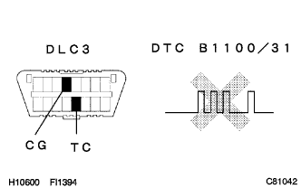
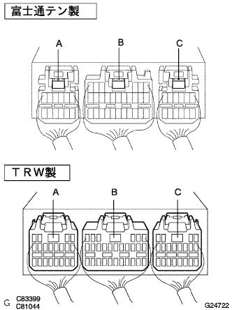

DTC B1100/31 エアバッグセンサASSY CTR故障 |
| DTC No. | DTC検出項目 | 問題発生箇所 |
|---|---|---|
| B1100/31 |
|
|
| 手順1 | エアバッグ センサASSY点検 |
|  |
バッテリーのマイナスターミナルを接続し、IGスイッチをONにして60秒間待機する。
SSTを使用してダイアグコードを消去後、再度ダイアグコードを点検する。
ウォーニングランプによるコード読み取りの場合
TaSCANによるコード読み取りの場合
|
| ||||
| NG | |
| 手順2 | エアバッグセンサASSY CTRコネクター接続状態点検 |
IGスイッチをOFF(LOCK)にする。
バッテリーのマイナスターミナルを切り離し、90秒間待機する。
エアバッグセンサASSY CTRに接続されているコネクタの接続状態を点検する。
|
| ||||
| OK | |
| 手順3 | エアバッグセンサASSY CTRコネクター半かん合検出ピン点検 |
|  |
SST(トヨタエレクトリカルテスター)を使用して、エアバッグセンサASSY CTR用コネクタ3個の半かん合検出ピンにテスター棒をあて、各コネクタ間(A-B、A-C、B-C)の導通を点検する。
|
| ||||
| OK | |
| 手順4 | エアバッグ センサASSY点検 |
エアバッグセンサASSY CTRにコネクタを確実に接続する。(手順2で接続が不十分だった場合)
バッテリーのマイナスターミナルを接続し、IGスイッチをONにして60秒間待機する。
SSTを使用してダイアグコードを消去後、再度ダイアグコードを点検する。(要領は参照)
ウォーニングランプによるコードの読み取りの場合
TaSCANによるコード読み取りの場合
|
| ||||
| OK | ||
| ||